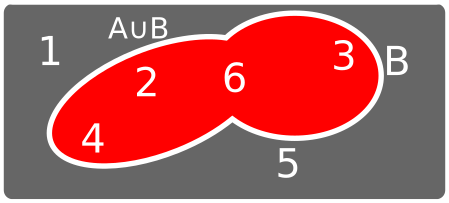
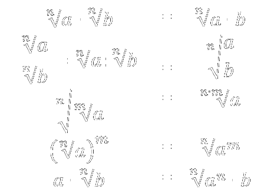

Tema 1
Números reales
Conjuntos numéricos

1Clasifica los siguientes números en naturales, enteros, racionales o irracionales:
- 25,37 \[ \in \mathbb{Q} \]
- -6/17 \[ \in\mathbb{Q} \]
- 2/5 \[ \in \mathbb{Q} \]
- \[-\sqrt{12}\] \[ \in \mathbb{I} \]
- \[ \pi \] \[ \in \mathbb{I} \]
- -5 \[ \in \mathbb{Z} \]
Valor absoluto
Si \[x \in \mathbb{R}\], \[|x|\] es distancia en la recta real de x al 0.
Valor absoluto: propiedades
- \[|a| \ge 0 \]
- \[|a \cdot b| = |a| \cdot |b| \]
- \[d(a,b) = |a - b|\] (nos permite calcula la distancia entre dos puntos en al recta real)
2Desarrolla el valor de las siguientes expresiones:
- \[2x - 3 + |2x-3|\]
- \[|x+2| + |x+3|\]
- \[x +|x-3| + |x+5|\]
Intervalos y entornos
Son subconjuntos continuos de la recta real.- Intervalos: indicamos principio y fin
- Entornos: indicamos centro y radio
Intervalos
- Abierto: no incluímos el extremo. Se indica con paréntesis (2,5)
- Cerrado: incluímos el extremo. Se indica con corchetes [-6,10]
3Representa como intervalos los siguientes conjuntos de números:
- \[\{x \in \mathbb{R} / -1 \le x \lt 5 \} \] = [-1, 5)
- \[\{x \in \mathbb{R} / -1 \ge x \gt -5 \} \] = (-5,-1]
- \[\{x \in \mathbb{R} / -3 \lt x \} \] \[= (-3, \infty) \]
- \[\{x \in \mathbb{R} / 3 \gt x \} \] \[= (-\infty, 3) \]
- \[\{x \in \mathbb{R} / -1 \le x \le 0 \} \] \[= [-1,0] \]
Operaciones con conjuntos: unión e intersección

Unión
Intersección

Unión e intersección de intervalos
4Dados \[A=(2,4)\], \[B=(-2,4)\] y \[C=(-3, \infty)\], calcula:
- \[A \cup B \cup C\]
- \[A \cap B \cap C\]
- \[(A \cap B) \cup C\]
- \[(A \cup B) \cap C\]
Entornos
Indicamos el centro y el radio
\[E(3,4) =\{x \in \mathbb{R} / |x-3| \lt 4 \} = (-1, 7)\]
Entornos
- Entornos abiertos: se incluyen los extremos. \[E(3, 10)\]
- Entornos cerrados: no se incluyen los extremos. \[E[-2, 5]\]
5Expresa como entornos los intervalos \[(-5, 2)\] y \[[-10, 10]\]
6Expresa como entornos los siguientes conjuntos de números:
- \[\{x \in \mathbb{R} / |x-2| \lt 5 \} \]
- \[\{x \in \mathbb{R} / |x+2| \le 3 \} \]
- \[\{x \in \mathbb{R} / |x-5| \lt 2 \} \]
Aproximación de números reales
- Redondeo
- Truncamiento
7Aproxima los siguientes números como se indica:
- Redondea a las centésimas el número 12,23563
- Trunca a las décimas el número 9,2934
Cálculo de errores
- Error absoluto: \[ E_a = |V_{\text{real}} - V_{\text{aproximado}} | \]
- Error relativo: \[ E_r = \frac{E_a}{V_{\text{real}}}\]
8Calcula el error absoluto y el error relativo cometido al aproximar el número \[\sqrt{2}\] por \[1,4\].
Notación científica

Operaciones con Not. Científica
- Multiplicación / División
- Suma / Resta
9Expresa el número \[42 000\] y el número \[0,002\] en notación científica. Calcula la suma y el producto de estos números expresados en notación científica.
Radical
\[ \sqrt[n]{a} = b \iff b^n = a \]Por exemplo \[\sqrt[3]{8} = 2\] porque \[2^3\]
Propiedades
10Extrae factores de los siguientes denominadores:
- \[ \sqrt{3^{10} \cdot 5^7 \cdot 7 \cdot 13^2}\]
- \[ \sqrt[3]{3^{10} \cdot 5^6 \cdot 7^2 \cdot 13^3} \]
11Introduce los siguientes factores en el radical:
- \[ 2 \cdot 3^2 \sqrt{5}\]
- \[ 2 \cdot 3^2 \sqrt[5]{5^3}\]
10Simplifica las siguientes expresiones
- \[ \sqrt{2} + \frac{3}{2} \sqrt{8} - \frac{1}{4}\sqrt{18} \]
- \[ \sqrt[4]{144 a^2} - 2 \sqrt{\frac{27}{16} a} + \sqrt{3a} \]
- \[ \frac{a^4 \sqrt[3]{a^2}(\sqrt{a})^3}{\sqrt{\sqrt[3]{a^5}}} \]
Racionalizar
Eliminar las raíces del denominador
11Racionaliza los siguientes denominadores:
- \[ \frac{5}{2\sqrt{5}} \]
- \[ \frac{5}{2\sqrt[4]{5}} \]
- \[ \frac{5}{2\sqrt{5} + 1} \]
- \[ \frac{\sqrt{6}}{2\sqrt{3} - 3\sqrt{2}} \]
Logaritmos
\[ log_a (b) = c \iff a^c = b \]
12Aplicando la definición, halla el valor de los logaritmos:
- \[log_3 27 \]
- \[log_3 \sqrt{27} \]
- \[log_5 \sqrt[3]{25} \]
- \[log_7 \frac{1}{49} \]
- \[log_9 \sqrt[3]{3} \]
- \[log_3 0,\widehat{3} \]
Propiedades de los logaritmos
\[log_a (b \cdot c) = log_a (b) + log_a (c)\]
\[log_a (b^n) = n \cdot log_a (b)\]
\[log_a (\frac{b}{c}) = log_a (b) - log_a (c)\]
\[log_a b = \frac{log_x b}{log_x a}\]
13Factoriza y aplica las propiedades de los logaritmos para expresar en función de suma ou resta de logaritmos de números primos:
- \[ log~2^4 \cdot 3 - log 2^3 \cdot 3^4 \]
- \[ log 24 + log \frac{16}{9} - log 144 \]
- \[ log~686 + log~56 - log~\frac{16}{49} \]
- \[ log~100 - log \frac{8}{25} + log~250 \]
14Expresa el valor de E en cada caso sin que aparezcan logaritmos:
- \[log E = log~x + 2 log~y - log~z\]
- \[log E = 3(log x -1) - 2(1-log y)\]
- \[log E = 2 log\sqrt{x} - log x - log y + 3 log \sqrt[3]{y}\]
- \[log E = log x^3 + 3 log y - log x^4\]